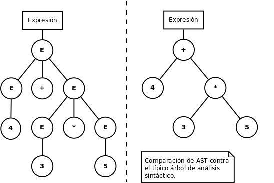
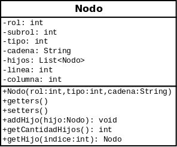

Traducido al español, el árbol de sintaxis abstracta es una estructura que representa la "esencia" de un árbol de análisis de sintaxis, ya que el AST elimina la presencia de nodos innecesarios, nodos que conceptualmente están disponibles en el árbol de análisis de sintaxis, pero que realmente no son necesarios para realizar las acciones. Por ejemplo en una operación aritmética, como 3 + 4 * 5 durante su análisis, utilizando un analizador ascendente con una gramática ambigua produciría un árbol de análisis sintáctico como el de la izquierda de la siguiente imagen; comparando ese árbol contra el AST (árbol de la derecha) que representa exactamente la misma operación, las ventajas del AST son evidentes.

JavaCC tiene la capacidad de generar un AST por medio del uso de JJTree, en esta guía nos daremos a la tarea de construir un AST propio, ya que hay producciones (como TIPO_VAR) que no representan un nodo representativo del árbol, esto puede sustituirse por un atributo en el nodo, un atributo tipo por ejemplo. Siguiendo buenas prácticas de programación lo primero que se debe hacer es crea un paquete para organizar todas las clases relacionadas con el AST; con el paquete listo es tiempo de crear la clase Nodo, como recomendación podés utilizar una clase similar a la del siguiente diagrama.

Lo mejor de crear nuestro propio AST es que cada programador decide qué atributos utilizar, en el código de SBScript decidí agregar un atributo llamado listaAux de tipo List<String> para utilizar solo en algunas instrucciones. No existe una regla para crear los nodos del AST, sin embargo es bueno seguir el siguiente patrón de diseño.
Para homogenizar la creación de los nodos dentro de la gramática de JavaCC es necesario utilizar una clase abstracta cuya única responsabilidad sea crear nodos con una estructura fija. Para ello se crea un método estático para cada "tipo de nodo", los parámetros para cada método pueden variar y deben de tener un nombre significativo.
Que una clase sea declarada como abstract significa que no se pueden crear instancias de dicha clase.
Que un método sea declarado como static significa que no se necesita de una instancia para poder llamarlo, basta con colocar el nombre de la clase, luego un punto y después el nombre del método.
Aplicando el patrón de diseño de Factory, se puede modular el código para que todos los cambios necesarios en el AST se hagan solamente en la clase FabricaAST.java reduciendo las responsabilidades de la gramática, para que no tenga que crear los nodos, sino que solamente se limite a obtener la información y estructurar los nodos en el AST. A continuación un ejemplo de cómo se utilizó la FabricaAST en la gramática de SBScript.
/**
* Crea el nodo con rol Constantes.SI, su primer hijo sera la condicion, el
* segundo hijo el cuerpo en caso de que la condicion se cumpla (then) y agrega
* el tercer hijo (cuerpo en caso de que NO se cumpla la condicion) si el
* parametro cuerpoElse es distinto de null.
* @param cond Nodo que representa la expresion que fungira como condicion.
* @param cuerpoThen Nodo cuerpo asociado al SI
* @param cuerpoElse null o Nodo cuerpo asociado al SINO
* @return El nodo SI.
*/
public static Nodo creaSi(Nodo cond, Nodo cuerpoThen, Nodo cuerpoElse) {
Nodo nodo = new Nodo(Constantes.SI, "Si[Sino]");
nodo.addHijo(cond);
nodo.addHijo(cuerpoThen);
if (cuerpoElse != null) {
nodo.addHijo(cuerpoElse);
}
return nodo;
}
La gramática se limitaba a reconocer las terminales y no terminales, obteniendo la información necesaria para crear el nodo correspondiente a la instrucción SI[SINO].
/**
* Esta producción detecta la existencia de una instrucción de
* tipo SI y crea la siguiente estructura para el AST (el SINO es
* opcional, por lo tanto su presencia en el AST también lo es).
* {@code SI ::= "Si" "(" EXP ")" CUERPO [ "Sino" CUERPO ]}
* __________
* | SI |
* |__________|
* | _______________
* (0)---| CONDICION |
* | |_______________|
* (1)---| CUERPO (SI) |
* | |_______________|
* (2)---| CUERPO (SINO) |
* |_______________|
*
* @return Nodo con rol Constantes.SI.
*/
Nodo SI():{ Nodo cond, si; Nodo sino = null; Token aux; }
{
aux=<PR_SI> "(" cond=EXP() ")"
si=CUERPO()
[ <PR_SINO> sino=CUERPO() ]
{
Nodo nodo = FabricaAST.creaSi(cond, si, sino);
nodo.setUbicacion(aux);
return nodo;
}
}
Los proyectos de Compiladores 2 son difíciles, pero más que difíciles, son exteeeensoooos, por lo mismo es necesario tener buenas prácticas de programación para no frustarse, para hacer una aplicación facilmente escalable. Por todo lo expuesto hasta ahora, creo que puedo hacer un par de recomendaciones para la creación de un AST versátil y robusto.